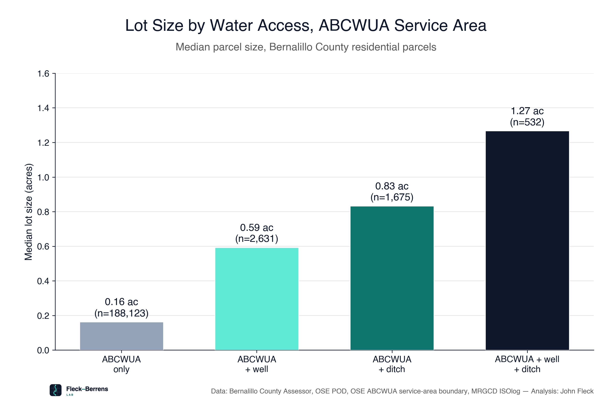
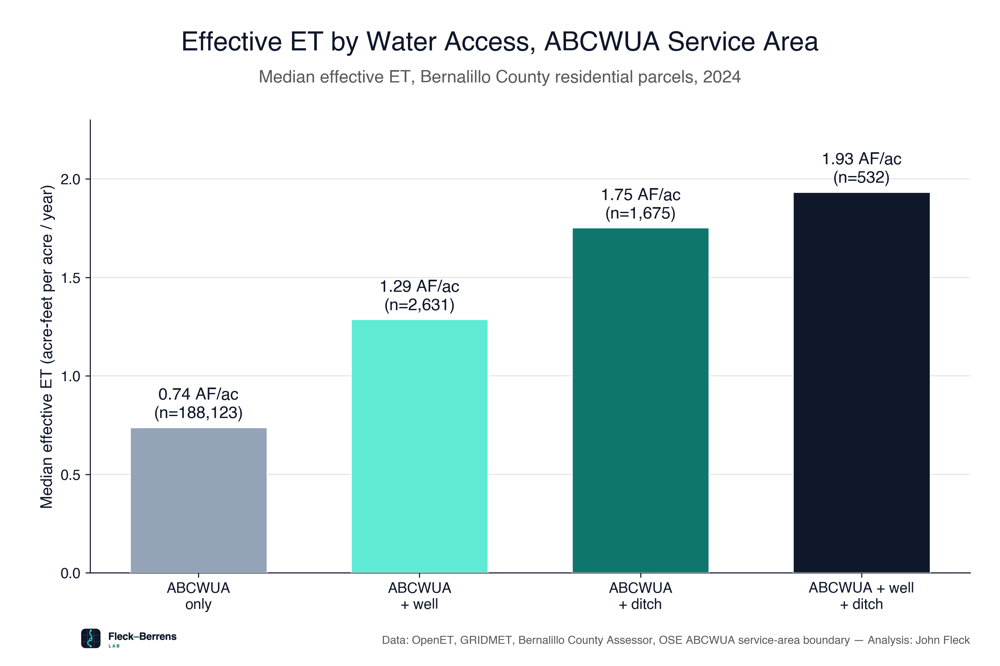
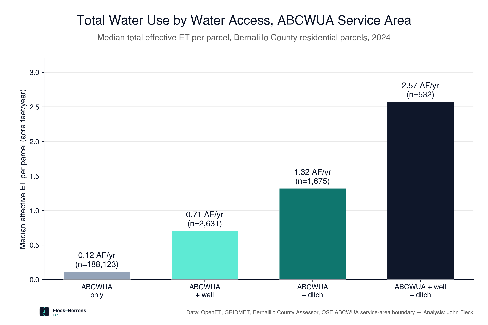

Lot Size and Water Use by Water-Access Category — methodology#
Understanding where domestic wells are located, and how the consumptive use of water on residential parcels with a well relates to residential parcels solely dependent on municipal water, provides a useful tool for understanding trends in consumptive water use in the Middle Rio Grande Valley. While municipal water use is metered and overall trends are widely reported, domestic well water use is unmeasured, and has not played a significant role in Middle Rio Grande Valley water management discourse.
Remote sensing tools, as gathered and freely provided by the OpenET project, allow us to begin assessing usage patterns across this otherwise unmeasured and unmonitored sector. While OpenET lacks the precision needed to measure water use at the scale of a single lot, careful application of the tool allows us to begin looking at relationships and trends of aggregate use across broad categories of similar residential parcels. The data suggest that residential parcels with domestic wells tend to be substantially larger and substantially greener on average that those served solely by municipal supply.
This note summarizes how the water-access-categories replication notebook
(notebooks/water_access_categories/water_access_categories_replication.ipynb) classifies
Bernalillo County residential parcels and compares them. The notebook is the source of truth;
this is a plain-language overview.
Question#
Within the ABCWUA drinking-water service area, how do lot size and water use compare between parcels that rely on the utility alone versus parcels that also have a domestic well, ditch (acequia/MRGCD) access, or both?
Published figures#
{kind=link}

{kind=link}

{kind=link}

The four categories#
Every residential parcel (assessor PROPCLASS = 'R') whose representative point falls inside the
ABCWUA service area is classified by two binary flags:
HAS_WELL — the parcel contains at least one active, domestic-use OSE well (use codes
DOM,DOL,PDM,DCN; PLSS centroid-stack PODs dropped, same convention as the domestic-wells notebook).HAS_ISOLOG (“ditch water”) — at least 10% of the parcel’s area overlaps the MRGCD 2021 ISOlog layer (MRGCD’s mapped irrigation-serviceable land) — a proxy for ditch/acequia access, not a literal water-right record.
Category |
Published n |
Published median lot size |
Median effective ET |
Median total water use |
|---|---|---|---|---|
ABCWUA only |
188,123 |
0.16 ac |
0.74 AF/ac |
0.12 AF/yr |
ABCWUA + well |
2,631 |
0.59 ac |
1.29 AF/ac |
0.71 AF/yr |
ABCWUA + ditch |
1,675 |
0.83 ac |
1.75 AF/ac |
1.32 AF/yr |
ABCWUA + well + ditch |
532 |
1.27 ac |
1.93 AF/ac |
2.57 AF/yr |
All three metrics rise together: a roughly 8× spread in lot size, 2.6× in per-acre effective ET, and a compounding ~22× spread in total water use per parcel from utility-only lots to lots with every water source.
Location limitations for the well flag#
The HAS_WELL classification depends entirely on whether an OSE well record has a location
precise enough to place it inside a specific parcel. A meaningful share of records do not, and
the gap is not evenly spread across the well population.
Of the 9,406 active domestic wells inside the ABCWUA service area, 4,777 (50.8%) share a coordinate with ten or more other wells and carry no finer location than a roughly 10–160 acre PLSS legal-description cell — a “stack.” Because we cannot tell which specific parcel within that shared area actually holds each well, these are dropped from the well count entirely rather than guessed at.
This gap tracks well age closely, not randomly:
Wells finished before 1990 |
Wells finished 1990 or later |
|
|---|---|---|
Dropped (imprecise, shared location) |
68.0% |
1.2% |
Kept (well flag set) |
32.0% |
98.8% |
This pattern — a sharp break right around 1990, with essentially no imprecisely-located wells after 2000 — looks like a change in OSE recordkeeping practice (routine capture of finer location detail beginning around 1990) rather than anything particular about older wells.
This means the category comparisons in this analysis are conservative in one specific, identifiable direction. A dropped well can only cause a parcel to be missed from “ABCWUA + well” and counted as “ABCWUA only” instead — never the reverse, since the drop rule only removes wells from consideration, it never adds one. Some share of the parcels counted in “ABCWUA only” do have a well we simply could not confirm. That pulls this category’s median lot size and water use upward, toward “ABCWUA + well” values — meaning the true gap between the two categories is, if anything, larger than the published figures show, not smaller.
Method#
Residential parcels. All Bernalillo County residential parcels whose representative point falls inside the ABCWUA service-area boundary (the OSE Public Water System polygon — see caveats).
Lot size. Parcel geometry area (
ACRES).Effective ET. OpenET ensemble evapotranspiration − 0.7 × GRIDMET precipitation (the same FAO-rule-of-thumb convention used in the quadrant-map notebook — see
docs/quadrant_map/README.mdfor the citation), 2024, summed over each parcel’s actual geometry via Google Earth Engine’sreduceRegions— a genuine per-parcel total, not a depth-times-area approximation.Three summary statistics per category, all medians (the lot-size distribution is strongly right-skewed, so means would overstate typical values):
Median lot size (acres)
Median effective ET per unit area (acre-feet/acre) — normalizes out lot-size differences
Median total effective ET per parcel (acre-feet/year) — the actual volume on the median parcel, not a multiplication of the other two medians (see caveats)
Key caveats#
“Ditch water” = ISOlog overlap, not a literal water-right record. The MRGCD ISOlog layer maps irrigation-serviceable land, not confirmed acequia shares or actual diversions.
Category membership is a snapshot (2021 ISOlog, current OSE POD vintage), not tracked through time.
Domestic well presence is conservative. A well is only counted if its OSE record has a precise-enough location — see “Location limitations for the well flag” above for the scope of this undercount and why it biases the “ABCWUA only” category’s numbers upward, not down.
median(A) × median(B) ≠ median(A × B). The total-water-use chart uses each parcel’s own true per-parcel ET total, not the lot-size median multiplied by the per-acre-ET median — those two quantities differ by up to ~10% in the middle categories because lot size and per-acre ET intensity aren’t perfectly correlated across parcels.Parcel-scale resolution. Most residential lots here (median 0.16–1.3 acres) are one or two OpenET/Landsat pixels (~30 m) or smaller — an individual parcel’s ET value carries real pixel-mixing noise. The category-level medians (built from thousands of parcels, except category 4’s 532) are far more robust than any single parcel’s number.
The ABCWUA boundary is provisional — see
docs/domestic_wells/README.mdanddata/domestic_wells/README.mdfor the same open boundary question that applies here.The 0.7× effective-precipitation coefficient is the same FAO rule-of-thumb convention used throughout this project — see
docs/quadrant_map/README.mdfor the citation and its caveats.2024 cross-section only — this is a snapshot, not a trend.
Residential parcels only (assessor
PROPCLASS = 'R') — commercial, vacant, and other non-residential parcels are excluded from all four categories.